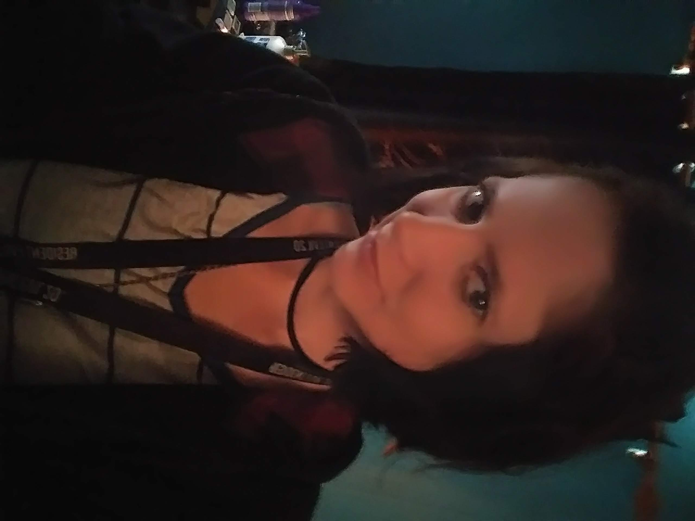

Megan Farmer - Testimonial
I am a student at Chattanooga State Community College and studying Computer Information
Technology with a concentration in networking. I have had some experience working at the
Help Desk and the Networking departments at Chattanooga State while studying. My experience
includes jobs such as imaging computers, replacing hardware, setting up new computers in classrooms,
deconstructing computer labs, setting up software programs such as AutoCAD and Maya, assembling a
server rack, assisting connecting a patch panel, troubleshooting basic computer problems, and inventory.
While I concentrated in Networking, I continued to self-study other aspects of Information Technology
such as Programming and Security. I have participated in a MAGIC event at Chattanooga State, which is
a capture the flag event with a team. Our team placed 23rd in the world and 3rd at Chattanooga State.